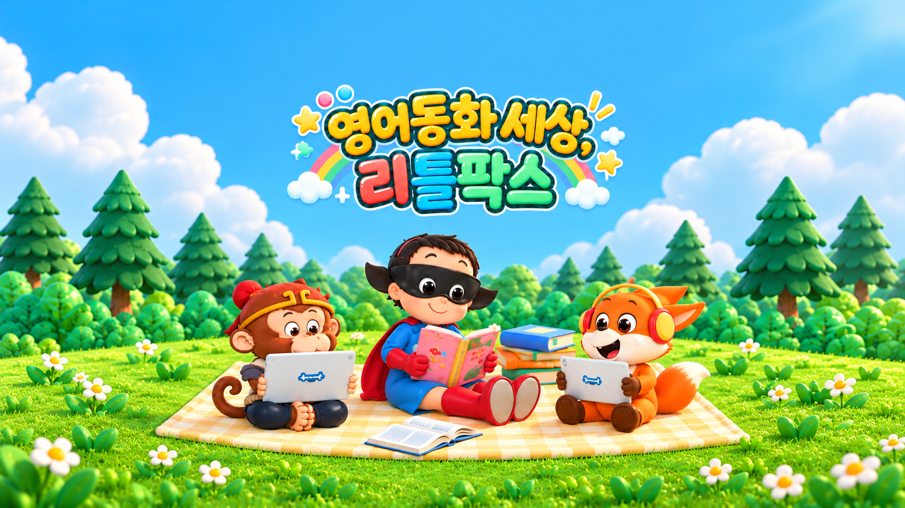
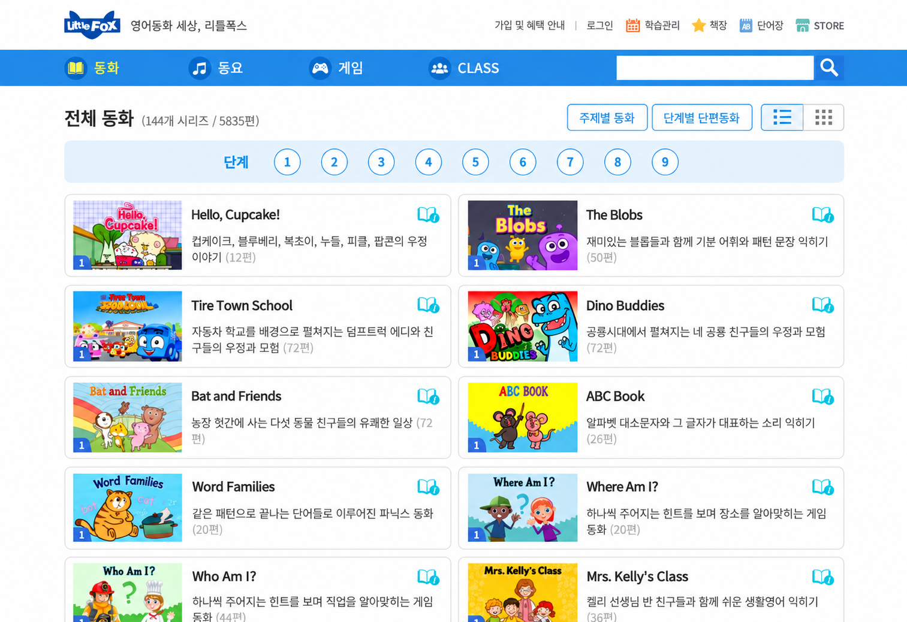
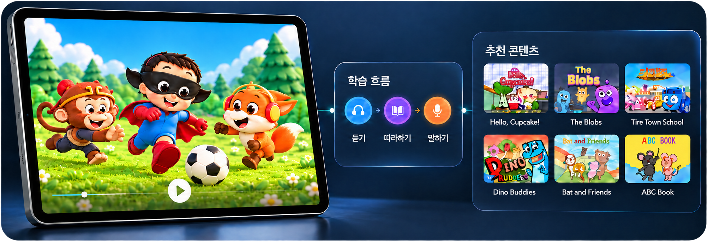

영어유치원, 영어학원을 다녀도 리틀팍스와 함께한 8년!
아이들이 리틀팍스를 볼 때는 영어를 공부로 안 느끼고 흥미롭게 느껴서 지속적으로 할 수 있었어요.
영상 보기

스크롤

우리 어른들이 해왔던 전통적인 방식으로, 파닉스를 익히고 단어를 암기하고 문법을 익혀서 문장을 해석하고 시험에만 대비하는 영어가 아니라, 세계 어디서든지 자유롭게 말하고 쓸 수 있는 영어를 하자는 것입니다. 그러려면 파닉스가 아니라 듣기부터 시작해야 합니다.
우리 아이들이 한글을 습득한 것처럼, 듣기가 어느 정도 차고 넘쳐 임계량(하루 1시간 기준으로 3년, 약 1,000시간)에 도달하면 영어를 잘 알아듣게 되고, 말하기를 시작하며, 소리로 익힌 영어를 문자로 읽고, 말로 표현하던 영어를 글로 써갈 것입니다.
영어를 파닉스부터 시작한다면, 문자를 인지할 수 있는 유초등 시기부터 영어를 학습할 수밖에 없습니다.
그러나, 듣기부터 시작한다면, 영어에 대한 거부감이 없는 영유아기부터 쉽고 재미있는 영어 동화 영상으로 영어를 습득해갈 수 있습니다. 이 시기의 아이들은 언어습득장치 (Language Acquisition Device)가 가장 활발하게 작동하는 언어 천재이기 때문입니다.
영어는 6-10년 꾸준히 지치지 않고 지속해야하기 때문에, 이해하기 쉽고 재미있는 영어 영상과 동화 책을 사용해야 합니다. 어렵고 재미가 없으면 힘들어서 중도에 포기할 수 밖에 없습니다.
영어 영상과 동화책을 사용한다 할지라도, 이른 시기의 지나친 암기와 테스트, 지루한 반복 연습, 아이의 성향을 고려하지 않은 부모의 강압적인 지도는 아이와 부모 모두를 지치게 합니다.
아이가 좋아하는 영상과 책을 마음껏 골라 보고 읽을 수 있는 환경을 만들고, 칭찬과 격려로 기다려 주었을 때, 영어는 습득될 수 있습니다.
동화 구성 비율
주제별 구성 비율
| 단계 | 미국 학교 Reading Level |
편수 | Animation | eBook + Printable Book |
|---|---|---|---|---|
| 편당 시간 | 형태 | |||
| 1 | Kinder-Grade 1 | 512 | 2.5분 | Picture Book |
| 2 | Grade 1 | 908 | 3.0분 | |
| 3 | Grade 1-2 | 802 | 3.5분 | |
| 4 | Grade 2 | 909 | 4.5분 | Early Chapter Book |
| 5 | Grade 3 | 661 | 5.5분 | Chapter Book |
| 6 | Grade 3-4 | 784 | 7.0분 | |
| 7 | Grade 4-5 | 573 | 7.5분 | Children's Novel |
| 8 | Grade 5-6 | 452 | 8.5분 | |
| 9 | Grade 6 | 226 | 9.0분 |